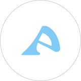
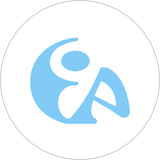

가톨릭문화연구회(CA)는 ‘참 인간’으로 청소년들이 성장할 수 있도록 가톨릭인성교육(사랑, 생명존중, 지구시민교육 등)을 연구하고 교육합니다. 서울시내 초·중·고등학교의 교육에 협력하고 창의적체험활동(동아리활동) 및 범교과활동에 보탬이 되고자 봉사자들을 양성하여 가톨릭인성교육반(I-Brand반)을 운영하고 있습니다.
가톨릭인성교육반(I-Brand반) 운영을 위한 교재 연구 및 제작
서울 시내 초·중·고등학교의 창의적체험활동 및 동아리 수업 운영 및 지원
교육자원봉사자를 모집 및 교육하여 I-Brand반에 파견
교육자원봉사자를 위한 성지순례와 피정을 계획 및 진행
두 손을 높이 들어
하느님을 찬미

무릎을 꿇고 하느님을
흠이웃을 사랑
